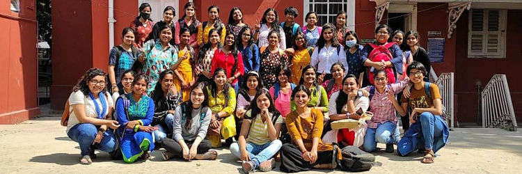

Courses
Undergraduate
Semester Wise Three years B.A. Honours Course
(Under CBCS, University of Calcutta)
Intake Capacity : 46
Postgraduate
Semester Wise Two years M.A Course
(Under CBCS, University of Calcutta)
Intake Capacity : 16
|  |
About the Department
The Department of English is the first department to have been set up in this heritage institution. A. W. Croft had arranged the transfer of BabooSosi Bhushan Dutt, 'a master of English and of Philosophy', from Ravenshaw College, Cuttack to Bethune College (then part of Bethune School) in Calcutta, to teach Kadambini Basu in the F.A. class. In 1890. Bethune College opened its course in B.A. (Honours) Examination of Calcutta University with three women candidates among whom Sarala Ghosal (later Sarala Devi Choudhurani) scored the highest marks and won the Padmavati Gold Medal. The English department made great progress under the guidance of dedicated teachers like Prof. Sujata Chaudhuri, Prof. Karuna Chakraborty; Prof. Manisha Sen, Prof Ishita Dutta and Prof. Santa Mahalanobis. At present, the department has six full-time teachers.
According to the NAAC Peer Team's recommendation, a Postgraduate Course was introduced in the year 2007. The department maintains a healthy balance between tradition and modernity, academics and culture. Regular seminars and workshops are organized in the department for the students. A Students' Exchange Programme has been initiated in collaboration with Hooghly Mohsin College from June 2021. This has received very good response from students of both institutions at the UG and PG level.
Our students fare well in academic as well as extracurricular activities. Regular and strict schedule of classes and tutorials as well as remedial classes for slow learners ensure their academic development. The department also has a good percentage of progression to postgraduate level. In the recent past, many of our students have cleared the National Eligibility Test (NET) for Lectureship in colleges. The department is proud of its students.
Faculty
| Dr. Anushila Hazra Bhattacharya Associate Professor and HOD M.A.,M.Phil.,Ph.D. |
 |
Dr. Debalina Banerjee Associate Professor M.A., Ph.D. |
Dr. Mandira Mitra Assistant Professor M.A.,Ph.D. | ||
| Dr. Piyali Gupta Assistant Professor M.A.,M.Phil.,Ph.D |
Smt. Neelanjana Basu Assistant Professor M.A.,M.Phil. |
 |
Smt. Arati Banerjee Assistant Professor M.A.,B.Ed. |